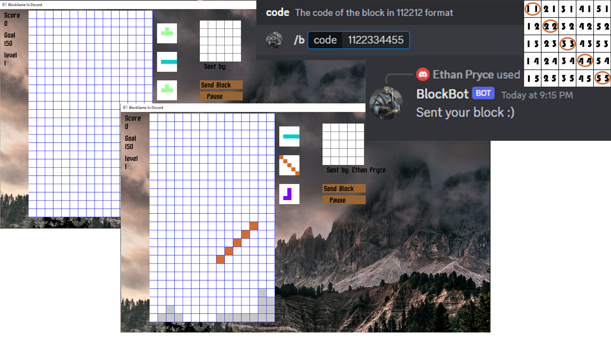

Blockgame Vs Discord
Components
- C++
- C++ threads and sockets
- SFML
- D++
A parody of a popular block game in C++ with a larger playing field and the ability to add hand drawn blocks. Expanded with a C++ based Discord Bot that makes the game into an asymmetrical multiplayer game. Players may create blocks by sending commands to the bot which adds them to the pool of shapes. The game works in two parts Bot + Server and Game + Client which communicate locally. Game architecture was chosen intentionally to avoid technical requirements such as port forwarding or external servers. Overall its a very strong proof of concept in what I hope can be a series of Discord party games